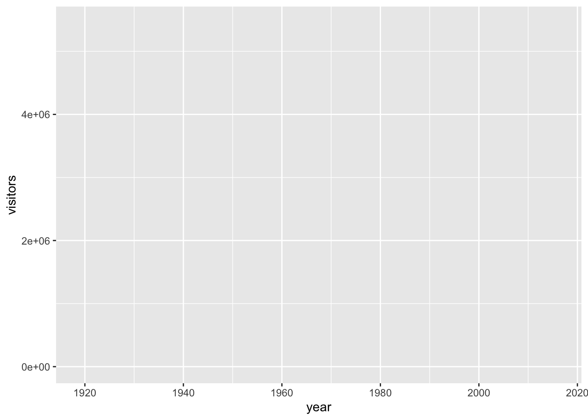
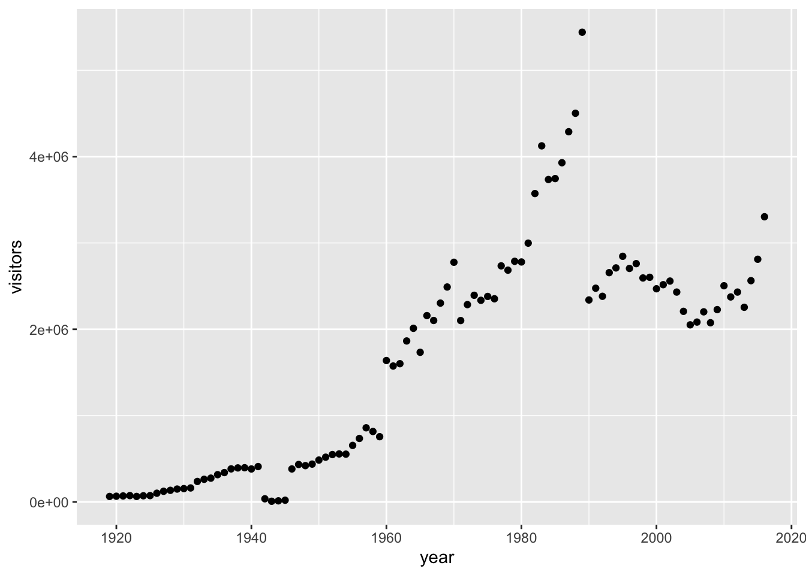
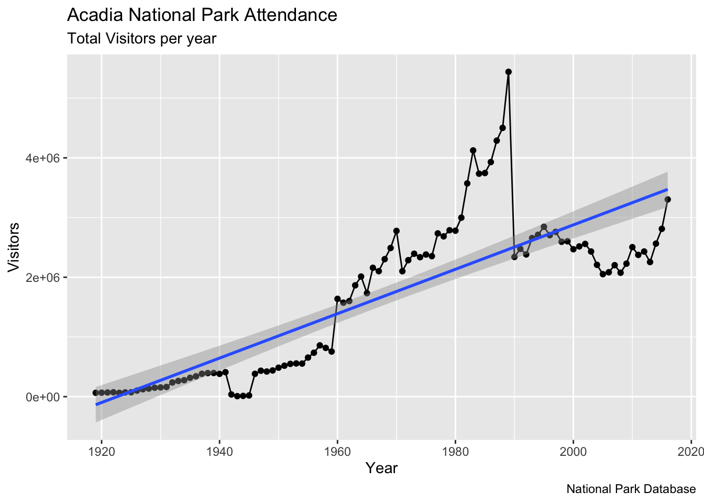
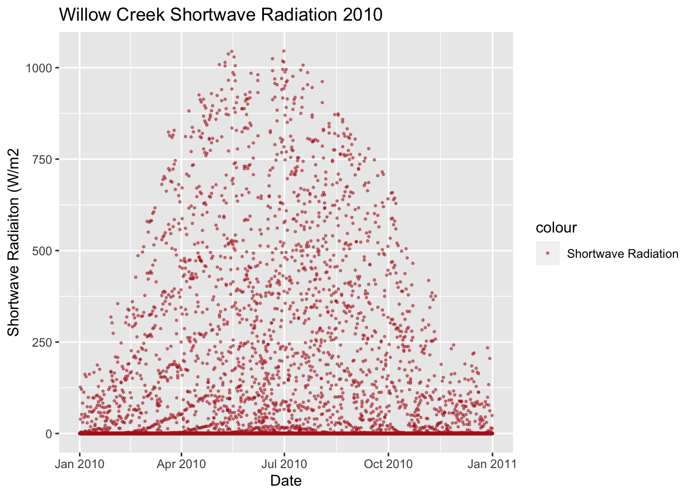

12 Plotting with ggplot2

So far, we’ve only used base graphics plotting routines. While there are endless customizations and schemes that can be used to generate publiation quality material, many advanced R programmers use ggplot2 to create plots. ggplot2 is a go-to plotting package and can do all that base graphics can do with different styling. ggplot2 is designed to work with dataframes, rather than individual vectors. ggplot2 also has more aesthetic options that allow for more visually unique & pleasing plots. The first thing you’ll notice about ggplot2 is that the syntax is different. Instead of coding all customizations through arguments or additional functions with the add=TRUE option keyed in, ggplot2 uses + to add in extra layers to a plot. This may seem weird at first, but the longer you spend with it the more regular it will seem. Below is a brief dicitonary of important ggplot functions.
| Function | Description |
|---|---|
ggplot() |
Creates a new ggplot |
aes() |
Construct aesthetic mappings |
+ |
add components to a plot |
geom_line() |
add line geometry to a ggplot |
geom_point() |
add point geometry to a ggplot |
geom_smooth() |
adds a trendline to a ggplot based on provided aesthetic data |
geom_density() |
adds a density plot to a ggplot |
scale_color_manual |
Adds color to ggplot layers |
xlim() |
x limits |
ylim() |
y limits |
xlab() |
x label |
ylab() |
y label |
ggtitle() |
adds title to a ggplot |
labs() |
ggplot function that takes a number of arguments and adds them to a ggplot (title, x label, y label, etc.) |
## Keep up to date with changes at https://www.tidyverse.org/blog/##
## Attaching package: 'ggplot2'## The following object is masked from 'package:latticeExtra':
##
## layer# load in a dataset - https://github.com/jsimkins2/geog473-673/blob/master/datasets/acadia.csv
acadia = read.csv("/Users/james/Documents/Github/geog473-673/datasets/acadia.csv")
# list the top rows of acadia
head(acadia)## X region state code park_name type visitors year
## 1 1 NE ME ACAD Acadia National Park National Park 64000 1919
## 2 2 NE ME ACAD Acadia National Park National Park 66500 1920
## 3 3 NE ME ACAD Acadia National Park National Park 69836 1921
## 4 4 NE ME ACAD Acadia National Park National Park 73779 1922
## 5 5 NE ME ACAD Acadia National Park National Park 64200 1923
## 6 6 NE ME ACAD Acadia National Park National Park 71758 1924# remove the X column, it's just a duplicate index
acadia$X = NULL
# Initialize Ggplot
ggplot(acadia, aes(x=year, y=visitors)) # year and visitors are columns in acadia dataframe, aes() stands for aesthetics

# remember the trendline? here is how easy it is to add with ggplot2
ggplot(acadia, aes(x=year, y=visitors)) + geom_point() + geom_smooth(method="lm")## `geom_smooth()` using formula 'y ~ x'Notice above how ggplot() creates a ggplot plot, but the geom_point() or geom_line() add the data to the plot. This is a key difference between base graphics and ggplot2. Also notice how you add what you want to the plot via the + symbol. Since the aes() (aesthetics) axes are already defined and since the acadia dataframe has been set, the functions geom_point() and geom_line() already know what data to add to the plots based on the dataset, x and y axes.
Another cool thing about ggplot2() is that we can save a plot as an object and accumuatively add things to it
## `geom_smooth()` using formula 'y ~ x'
# technically, we don't even have to say plot(g)...we can just print it and it will plot!
g = ggplot(acadia, aes(x=year, y=visitors))
g = g + geom_point()
g = g + geom_line()
g = g + geom_smooth(method="lm")
g## `geom_smooth()` using formula 'y ~ x'If you place aes in the initial ggplot argument, that sets the aesthetics, and the dataframe, for the entire plot regardless of the layers you add to it. However, we can also place an aes argument for each ggplot function we use (geom_line, geom_point, geom_smooth, etc.). This is useful if we are working with multiple datasets. Let’s create a dummy dataset with half the visitors of the acadia dataset and place the aesthetic function (aes) in each geom_point function.
# create dummy data where we divide the actual number of visitors by 2
dummy_data = acadia
dummy_data$visitors = dummy_data$visitors/2
# plot a ggplot instance with multiple lines
g = ggplot(acadia) + geom_point(aes(x=year, y=visitors), color="red") + geom_smooth(data = acadia, aes(x=year, y=visitors), method="lm", color="red") + geom_point(data = dummy_data,aes(x=year, y=visitors), color="blue") + geom_smooth(data = dummy_data, aes(x=year, y=visitors), method="lm")
plot(g)## `geom_smooth()` using formula 'y ~ x'
## `geom_smooth()` using formula 'y ~ x'We can “crop” out areas of a plot using xlim and ylim. This method does delete points, however.
g = ggplot(acadia, aes(x=year, y=visitors)) + geom_point() + geom_line() + geom_smooth(method="lm")
g + xlim(c(2000,2017)) + ylim(c(2000000, 3500000)) # x axis years 2000 to 2017, ylimit 2000000 to 3500000## `geom_smooth()` using formula 'y ~ x'## Warning: Removed 81 rows containing non-finite values (stat_smooth).## Warning: Removed 81 rows containing missing values (geom_point).## Warning: Removed 81 row(s) containing missing values (geom_path).Instead of cropping out, we can also just zoom in with the coord_cartesian function (we’re using cartesian coordinates here). This method does not delete points.
g = ggplot(acadia, aes(x=year, y=visitors)) + geom_point() + geom_line() + geom_smooth(method="lm")
g + coord_cartesian(xlim=c(2000,2017), ylim = c(2000000, 3500000)) # x axis years 2000 to 2017, ylimit 2000000 to 3500000## `geom_smooth()` using formula 'y ~ x'Notice how different the trendline is above. When we just zoom in, we preserve all of the data going into the plot which helps us keep the trendline of the entire dataset.
Now let’s check out adjusting the x/y labels and title. There are 2 ways.
# Add Title and Labels
g1 = ggplot(acadia, aes(x=year, y=visitors)) + geom_point() + geom_line() + geom_smooth(method="lm")
g1 + labs(title="Acadia National Park Attendance", subtitle="Total Visitors per year", y="Visitors", x="Year", caption="National Park Database")## `geom_smooth()` using formula 'y ~ x'
# or
g2 = ggplot(acadia, aes(x=year, y=visitors)) + geom_point() + geom_line() + geom_smooth(method="lm")
g2 = g2 + ggtitle("Acadia National Park Attendance", subtitle="Total Visitors per year")
g2 + xlab("Year") + ylab("Visitors")## `geom_smooth()` using formula 'y ~ x'What about changing up the colors, size, etc.?
g = ggplot(acadia, aes(x=year, y=visitors)) +
geom_line(col="yellow", size=5) +
geom_point(col="steelblue", size=3) +
geom_smooth(method="lm", col="firebrick") +
labs(title="Acadia National Park Attendance", subtitle="Total Visitors per year", y="Visitors", x="Year", caption="National Park Database")
g## `geom_smooth()` using formula 'y ~ x'12.1 ggplot2 with Willow Creek Meteorological Data
Let’s use ggplot2 to with the Willow Creek 2010 dataset.
library(ncdf4)
y = 2010
nc_file = nc_open(paste0("/Users/james/Documents/Github/geog473-673/datasets/WCr_1hr.", y,".nc"))
# what does the nc file look like
var_names = names(nc_file$var)
wcr_data = list()
dim <- nc_file$dim
for (v in seq_along(var_names)){
wcr_data[[v]] = ncvar_get(nc_file, varid = var_names[v])
}
wcreek_df = data.frame(wcr_data)
colnames(wcreek_df) = var_names
# create a new short_names vector that matches the order of the actual names
short_names = c("tair", "tmax", "tmin", "lwave", "pres", "swave", "ewind", "nwind", "shum", "prec")
# rename the column names to our new short name vector
colnames(wcreek_df) = short_names
date.seq = seq(as.POSIXct(paste0(y,"-01-01 00:00:00")), as.POSIXct(paste0(y,"-12-31 23:00:00")), by="hour")
wcreek_df['datetime'] = date.seq
# Plot a ggplot point plot of willow creek 2010 shortwave radiation
ggplot(wcreek_df) +
geom_point(data = wcreek_df, aes(y=swave, x=datetime, color = 'Shortwave Radiation'), size=0.5, alpha = 0.5) +
xlab("Date") +
ylab("Shortwave Radiaiton (W/m2") +
ggtitle("Willow Creek Shortwave Radiation 2010") +
scale_color_manual(values = c('Shortwave Radiation' = 'firebrick'))
# plot a ggplot density plot of the specific humidity
ggplot(wcreek_df) +
geom_density(data = wcreek_df, aes(x=shum, y=..density.., color = 'Specific Humidity'), size=3, adjust = 1, fill="lightblue", alpha = 0.5) +
xlab("Specific Humidity") +
ggtitle("Gaussian Specific Humidity Densities 2010") +
scale_color_manual(values = c('Specific Humidity' = 'firebrick'))Let’s break down the geom_density plot above. First, we create a ggplot window of wcreek_df dataframe. Then, we call the the geom_density function and declared data argument as wcreek_df. Then, we specified the aes (aesthetics) function within the geom_density function. In the aes, we declared the x axis - specific humidity - and the y axis - ..density.. - which is necessary for the plot to know that’s the axis to place the density on. The final piece to the aes() argument is the color. Notice that we also set the color here to “Specific Humidity”. This is not a color in R. Rather, it’s a reference to the color we declare down below with scale_color_manual. In other words, we state below that the color of “Specific Humidity” is firebrick within the scale_color_manual function. Still within the geom_density function, we set the size of the density line, set the adjust which is ggplots term for bandwidth, declared a fill color to fill in the density area and gave that fill color an alpha of 0.5 to make it semi-transparent. Xlabel and title we’ve already covered. Finally I set a manual color label and shape of the label for specific humidity.
12.2 Assignment:
Using the WCr_1hr.2012.nc found in the datasets folder, complete the following:
Using
ggplot2, create angeom_lineplot forair_temperature. Add a trendline to this plot. Include appropriate titles, axes, labels, colors, etc.Using
ggplot2, create a density plot ofair temperaturewith appropriate titles, axes, legend etc.Submit the plots to UD canvas.
Your final plots should look something like these…
## `geom_smooth()` using formula 'y ~ x'12.3 Extra Credit - 2 Points
Using the WCr_1hr.2010.nc, WCr_1hr.2011.nc and WCr_1hr.2012.nc found in the datasets folder, complete the following
- Create a density plot using ggplot2 of “Air temperature” with each year being a component of the density plot (adding each year to the density plot as you loop through the data). Adjust alpha settings, colors, linetypes, etc. to make each line extinct.
- Submit to assignment above labeled ‘extra_credit.png’ - also submit your code.